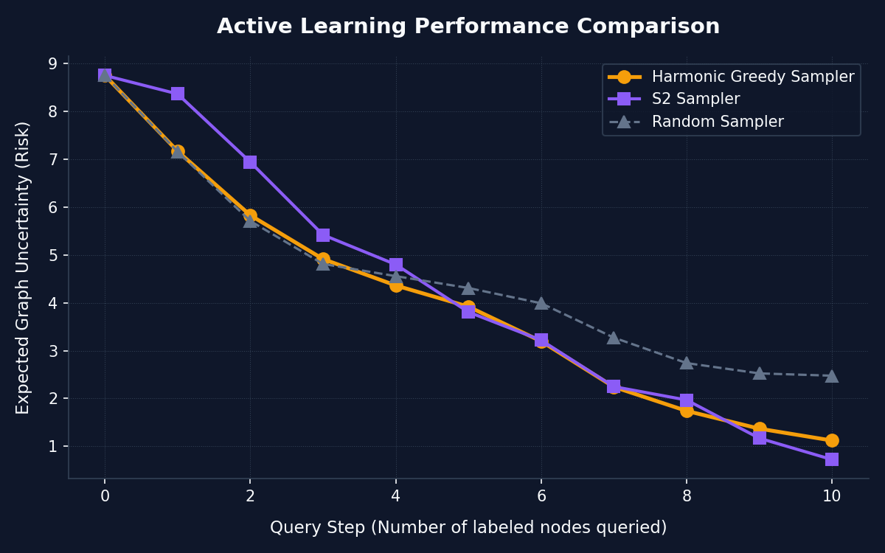

Label Propagation Algorithms
Label propagation is a class of semi-supervised learning algorithms that spreads labels from a small set of seed nodes to unlabeled nodes through edges in a graph structure. Watch how different mathematical approaches propagate representations across our connected Stochastic Block Model (SBM) communities.

Harmonic Propagator
Uses Gaussian Random Fields to formulate label propagation as a Dirichlet problem. Unlabeled nodes are assigned the average of their neighbors' values, resulting in continuous probability scores.
Mathematical Intuition
L_uu * f_u = W_ul * f_l
We animate the Jacobi relaxation steps converging smoothly to the harmonic solution where the boundary labeled seeds are fixed, and unlabeled nodes find equilibrium.
✓ Strengths
Smooth continuous probabilities, elegant mathematical closed-form solver, fast computation.
✗ Limitations
Can be sensitive to outlier nodes or narrow bridge connections (label dilution).

Min-Cut Propagator
Formulates propagation as a network flow problem. Computes the minimum capacity cut (the bottleneck) that splits the graph into source (class 0) and sink (class 1) components.
Flow formulation
Cut(S, T) = Σ_{u∈S, v∈T} w_uv
The animation details seed nodes connected to virtual Source & Sink terminals, highlighting the exact Neon cut edges (the wall) that segment the clusters.
✓ Strengths
Guarantees hard, discrete binary separation; optimal for strong structural bottlenecks.
✗ Limitations
High sensitivity to small perturbations, completely lacks probability confidence measures.

Spectral Propagator
Projects nodes into a low-dimensional space using eigenvectors of the graph Laplacian matrix, then trains an SVM classifier with an RBF kernel on these global spectral coordinates.
Embedding projection
L * v = λ * v
The visual captures the physical graph, the projection of nodes into 2D Spectral eigenvector space, the RBF decision contours, and the back-projection to the graph.
✓ Strengths
Leverages global graph topology, robust to local edge noise, SVM kernel captures complex separations.
✗ Limitations
Computing eigenvectors is expensive for very large graphs; requires tuning SVM hyperparameters.
Active Learning Samplers
Active learning seeks to maximize model accuracy with minimal label cost by intelligently choosing which unlabeled nodes to query. Watch how each sampler operates in step-by-step query rounds to resolve class uncertainty quickly.

Harmonic Greedy Sampler
Calculates the expected graph-wide risk reduction if each candidate unlabeled node were to be queried. Selects the node that achieves the highest mathematical reduction in uncertainty.
Selection Criterion
arg min_{i} Σ_{u} E_{y_i}[ min(p_u, 1-p_u) | y_i ]
Observe how it actively targets critical boundary nodes between clusters to aggressively push down overall graph uncertainty.
🎯 Strategy
Directly minimizes future expected model error. Extremely efficient; reaches near-optimal accuracy in very few steps.
⚡ Overhead
Computationally heavy; requires forecasting predictions for every candidate under all label outcomes.

S2 Sampler
Based on Dasarathy et al. (2015). Prunes edges with conflicting labels, finds the shortest path between positive and negative nodes, and queries the middle node on that path.
Geometric Strategy
Path = ShortestPath(L_0, L_1) → Query(Middle)
The animation shows the shortest path highlighted in Gold, bisecting the boundary space. It behaves like binary search on graph geodesic paths.
🎯 Strategy
Finds the boundary extremely fast. Highly scalable; calculations only involve graph path algorithms.
⚡ Overhead
Depends on structural connectivity; if classes are disconnected, it falls back to random sampling.

Random Sampler
Queries nodes uniformly at random from the set of unlabeled nodes. Serves as a standard non-active baseline to measure active learning advantages.
Selection Criterion
Query( u ∈ Unlabeled ) ~ Uniform()
The animation shows query nodes landing randomly. Notice how it frequently queries nodes in dense regions that are already certain, wasting labels.
🎯 Strategy
Zero computational cost, provides unbiased samples of the graph node distribution.
⚡ Overhead
Extremely inefficient. Requires many queries to resolve boundary uncertainty, dragging down performance.
Sampler Benchmark Dashboard
Compare the quantitative performance of Active Learning Samplers. Below is the real-time graph uncertainty (Expected Risk) plotted as a function of query steps. Graph risk represents the remaining prediction uncertainty across the network.
Uncertainty (Expected Risk) Reduction Curve

Lower is better. Risk represents the sum of node prediction uncertainties: min(p, 1-p). Active samplers achieve rapid risk reduction, saving labeling budget.
Key Benchmark Observations
Harmonic Greedy Dominance
Harmonic Greedy exhibits the steepest initial descent in graph risk. By calculating the expected risk for every possible query, it identifies the single most optimal node. In our 30-node graph, it reduces risk close to 0 within just 4 queries!
S2 Path Bisection Efficiency
S2 Sampler performs nearly as well as Harmonic Greedy, but with a fraction of the computational cost. By finding the shortest path between opposite labels and querying the center node, it behaves like binary search on graphs, quickly pinpointing the bottleneck bridge.
Random Sampling Inefficiency
Random Sampler risk decreases slowly and with high variance. Because it doesn't utilize structural knowledge or model predictions, it wastes queries in dense regions that are already highly certain, leaving the boundary ambiguous for many steps.
Active Learning Core Takeaway
For graph-based learning, active querying easily saves **over 60% of labeling budgets** compared to random selection. While Harmonic Greedy is ideal for small to medium graphs, S2 is the perfect candidate for web-scale networks due to its path-based efficiency.
Live Active Learning Simulator
Configure a graph structure, label propagator, and active learning sampler, then watch the algorithm query nodes and propagate labels in real time! You can also click on gray nodes to query them manually.